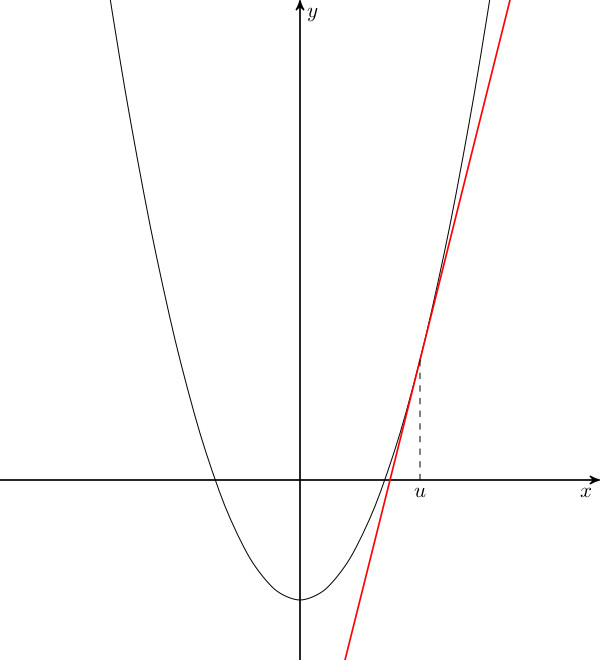

제곱근의 값을 구하는 방법에는 여러가지 방법이 있습니다. 여기서는 헤론의 방법(Heron's method)을 고등학교 1학년 공통 수학 수준에서 유도하는 방법에 대해서 서술해보겠습니다.
양수 \(a\)에 대해 제곱근 \(\sqrt{a}\)는 이차방정식 \(x^2 - a = 0\)의 해입니다.
\(f(x)=x^2 - a\)라고 하겠습니다.
그리고 \(\sqrt{a}\)보다 큰 어떤 수를 \(u\)라고 해보겠습니다.
이제 다음 그림과 같이 \(u\)를 지나고 \(y=f(x)\)의 그래프에 접하는 직선을 찾으려고 합니다.

먼저 \(f(u)=u^2 - a\)이기 때문에 직선은 \((u,\,u^2-a)\)를 지나야만 합니다.
이제 직선의 기울기를 찾으면 직선이 결정됩니다. 만약 미적분학을 배운 학생이라면 기울기가 \(2u\)임을 바로 유추할 수 있겠지만, 여기서는 포물선과 직선의 관계를 사용해 유도하겠습니다. 기울기를 \(k\)라고 하면 직선의 방정식은 \(y=k(x-u)+u^2-a\)입니다. 만일 포물선과 직선이 접한다면 방정식 \(f(x) = x^2 - a = k(x - u) + u^2 - a\)의 해는 하나만 존재해야 합니다. 이 방정식을 정리하면 \(x^2 - kx + u^2 - uk = 0\)이 되는데, 이의 이차방정식 판별식을 \(D\)라고 하면 \[D=k^2 - 4(u^2-uk) = k^2 - 4uk + 4u^2 = (k - 2u)^2\] 입니다. 중근을 가질 경우 \(D\)가 \(0\)이므로 \((k - 2u)^2 = 0\)이고, 따라서 \(k = 2u\)입니다. 이제 직선의 방정식은 \(y = 2u(x - u) + u^2 - a\)로 결정되었습니다.
마지막으로 이 직선의 \(x\)절편 \(v\)를 구해보겠습니다. \(2u (v - u) + u^2 - a = 2uv - u^2 - a = 0\)을 만족해야 하므로 \[v = \frac{1}{2u}(u^2 + a) = \frac{1}{2}\left(u + \frac{a}{u}\right)\] 를 얻습니다.
위 그림에서 보이듯이, \(u\)가 \(\sqrt{a}\)보다 크면 \(v\)는 여전히 \(\sqrt{a}\)보다 크지만 \(u\)보다 \(\sqrt{a}\)에 가까움을 알 수 있습니다. 따라서 \(v\)를 \(u\)로 하여 과정을 반복하면 값을 끊임없이 개선할 수 있고, 따라서 제곱근의 근삿값을 구할 수 있습니다. 즉, 이 과정을 반복할수록 구하려는 값에 더 가까워집니다.
예시로 \(\sqrt{13}\)의 값을 구해보겠습니다. \(13 < 16 = 4^2\)이므로 초기 \(u\)를 \(4\)로 잡겠습니다. 이때, 다음 Python 코드를 실행해 보면 다음과 같은 결과를 얻을 수 있습니다:
from fractions import Fraction
u = Fraction(4)
for i in range(5):
u = (u + 13 / u) / 2
print(f'[{i + 1}]: {u.numerator}/{u.denominator}')
print(f' {float(u)}')
[1]: 29/8
3.625
[2]: 1673/464
3.605603448275862
[3]: 5597777/1552544
3.605551275841458
[4]: 62670214676897/17381590189376
3.605551275463989
[5]: 7855111615296712300168050497/2178615977188081401764092544
3.605551275463989